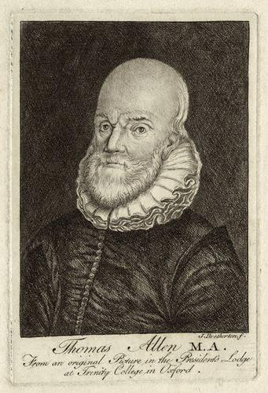

Tuesday, February the 21st, 2012
back to: title, date or indexes

In those dark times, astrologer, mathematician and conjuror were accounted the same things, and the vulgar did verily believe [Thomas Allen] to be a conjuror. He had a great many mathematical instruments and glasses in his chamber, which did also confirm the ignorant in their opinion, and his servitor (to impose on freshmen and simple people) would tell them that sometimes he should meet the spirits, coming up his stairs like bees.
from John Aubrey, Brief Lives (1972 edition edited by Oliver Lawson Dick)